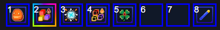
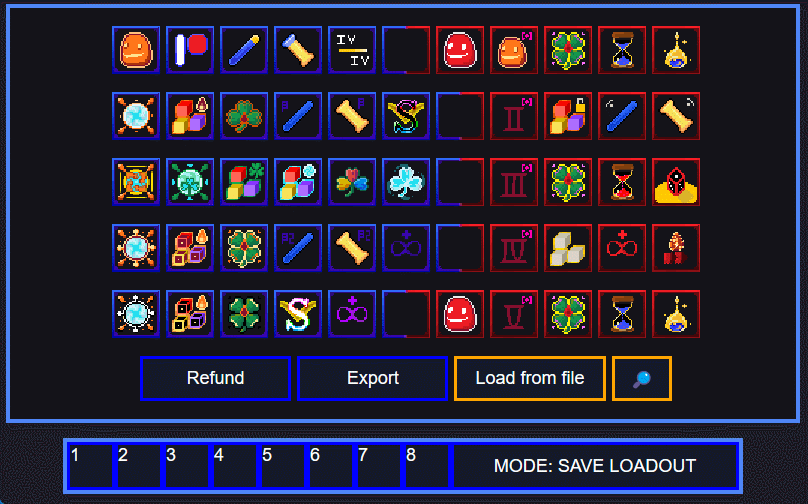
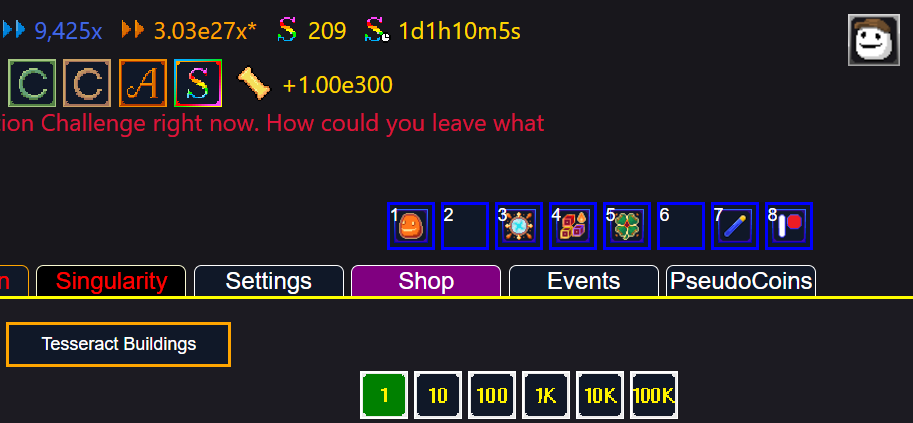

Hypersynergism
Quick links
About Hypersynergism
Hypersynergism is a mod for Synergism, or rather, a modding framework as it has gotten a little out of hand. When I started this mod, I had just a couple of things in mind that I wanted to mod into the game, but a couple of weekends later I suddenly found myself with more or less a fully fledged modding framework. Don't get me wrong, Hypersynergism does implement some actual game modifications as well (:D), but at this point it wouldn't do justice to call it just a mod.
Goal of the mod
The goal of this mod is to offer different "Quality of Life" features for the game, so features which:
- Gather, calculate, format and display extra information about the game and it's features
- Reduce the amount of excessive clicking without fully automating anything
- Allow for adjusting or configuring things in the game
- Provide hotkeys or shortcuts for the game's functions
- Warn, remind or notify the player of some things
In other words, the goal here is to build features which are not too game breaking, automating or streamlining. **Even with the mod, players will still need to play the game**, but ideally without developing carpal tunnel syndrome or getting fed up about meaningless busywork and clicking around.
Features
Extensive list of the mod's features can be found in the Mod Features section of the wiki.
Quick overview
- Promotion code injection
- Enhanced Talisman fragment BUY ALL button
- Potion buttons
- Quick expand + max for hepteracts
- Hepteract expand cost protection
- Mod panel
- In-game corruptions / runs reference sheet
- In-game hepteract ratios
- Game notification opacity control
- Reactive mouse hover and Auto click
- Reactive mouse hover
- Auto click
- Mod log
- Ambrosia loadout icons
- Ambrosia Loadout Quickbar (with equipped loadout indicator)
- Ambrosia loadout auto switcher when using ADD or TIME codes
- Toggleable patches (such as overflow fix on ambrosia page)
Changelog
Hypersynergism version 2.6.2 - Auto Ambrosia Loadout & Bugfixes
Released: 6.5.2025

Features
- Implemented ambrosia loadout auto switcher when using ADD or TIME codes
- Ambrosia loadout quickbar now shows the currently equipped loadout
- Fixed multi event binding bug with quickbar
- FIXED REMAINING HEPTERACT COST PROTECTION BUGS ONCE AND FOR ALL (there should be no more random expands anymore when they can't be afforded, like... at all, ever.)
- Made cost protection calculation with 2x cap more accurate
- Made cost protection info log shorter. Was 200 kilometers long.
Boring features
- Injected styles are now batched under single style tag
- Added `HSUtils.hiddenAction()` which can be used to perform actions "silently" which would otherwise pop an alert modal
- Added `HSUtils.unfuckNumericString()` which, when used on any string presentation of a number, should make sure that nothing will parse the number in a ridiculous way afterwards
- Added STATE type setting
- Added SELECT type setting
Version 2.6.1 - The Statistics and Ambrosia Update
Released: 1.5.2025

Features
- Compability changes to support the new update
- Added support for new ambrosia icons to be used in loadouts
- Fixed issue with how settings are saved
- Made quick expand and max automatically toggle hepteract confirmation notifications OFF.
- Fixed issue with how settings are saved
- Optimized element watcher(s) in HSHepteracts module. (hepteract quick expand can now be spammed more robustly and faster)
- Hepteracts will now show their "next max hepteract cost" in the UI when hovered
- Quark Hepteract shows the "next max quark cost" instead of hepteract cost
- Added "Patch settings"
- Added toggleable patch to fix overflow issues with the ambrosia page which made the page jump around
- (dev) Fixed tiny issue with HSHepteracts watch control
- (dev) Changed some logs into debug logs to avoid spam
- (dev) Added check and warning for trying to enable same modules twice
- (dev) Refactored HSElementHooker.watchElement to take a more convenient HSWatcherOptions object
- (dev) Implemented HSGameState module
- (dev) Implemented HSPatches module and a semi-clean way to implement various patches
- (dev) Color tags now support hex codes
- (dev) Added a lot more comments to code
Version 2.6.0
Released: 24.4.2025
Hypersynergism version 2.6.0 introduces AMBROSIA LOADOUT QUICKBAR as it's most notable feature:

The quickbar can be toggled on or off in the mod's settings and when enabled, it will be always accessible in the page's header.
The quickbar allows you to quickly switch between ambrosia loadouts without having to open the ambrosia menu.
The quickbar supports custom ambrosia loadout icons introduced in 2.5.1 and will stay in sync with the actual loadout menu within the ambrosia menu.
Version 2.5.1
Released: 11.4.2025
Hypersynergism version 2.5.1 introduces ambrosia loadout icons as it's most notable feature:
Simply drag any of the ambrosia upgrade icons to any of the loadout slots. Assigned icons persist and will be automatically assigned back when the mod loads!
Github
Click the logo to visit the mod's Github page

About
This is the "official" page for the Synergism mod called "Hypersynergism". As you can see, I've taken the liberty to mimic how the game looks to make this page. I've also "ripped" some icons, as well as copied and pasted some CSS-rules and HTML from the official game page.
This is to say that I haven't created these assets nor is the general page layout and look my original idea. The mod which this page is for is free, so I am hoping it's fine for me to borrow these assets like this.
Play the game at https://synergism.cc/!
Google Analytics
By the way, this page uses Google Analytics. The only reason it's there is because I like looking at data and graphs. Any site analytics potentially gathered with Google Analytics will be used only to satisfy my personal interest of data.